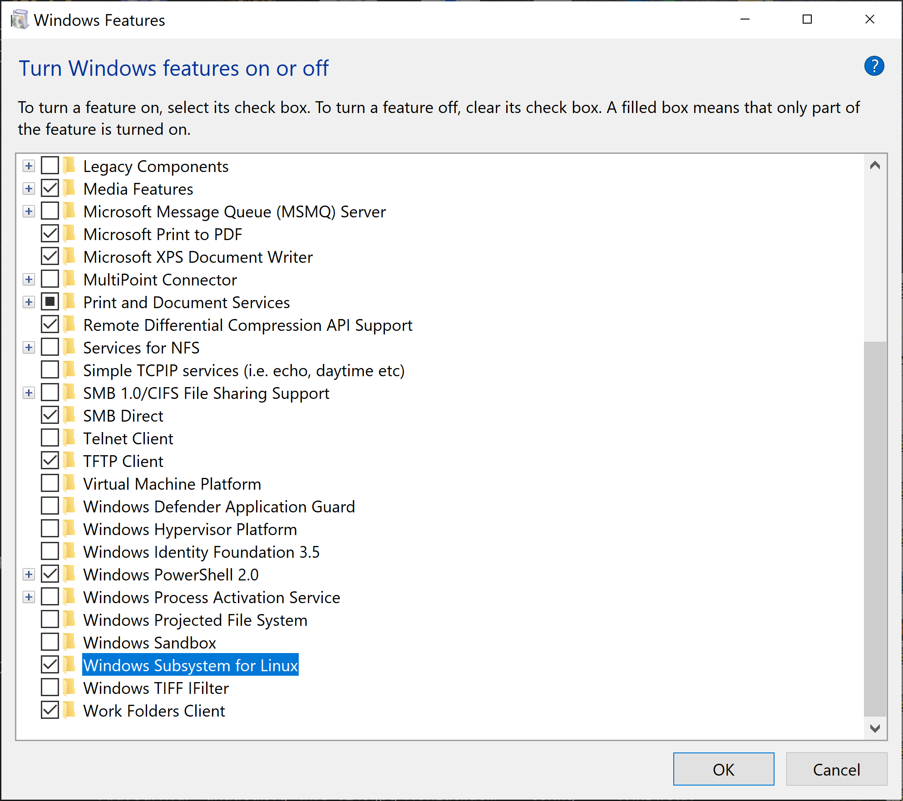
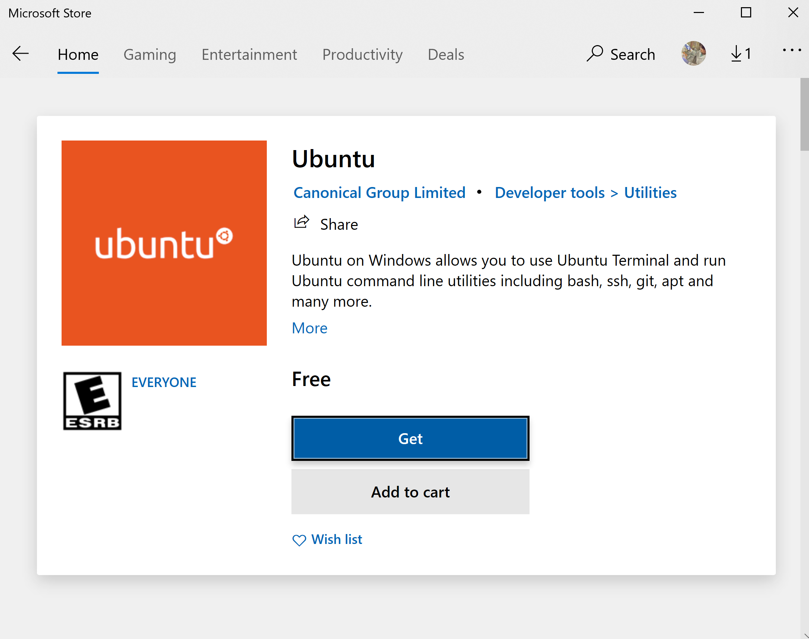

Getting Started¶
Example Jupyter notebooks¶
Here, we provide Jupyter notebooks for a variety of examples that can be downloaded for interactive use.
Analysis examples¶
Analyze the equilibrium base-pairing properties one or more test tube ensembles (or one or more complex ensembles) — these are the all-purpose sequence analysis tools.
- Tube analysis: analyze a test tube ensemble
- Multi-tube analysis: analyze a set of test tube ensembles
- Complex analysis: analyze a complex ensemble
- Multi-complex analysis: analyze a set of complex ensembles
Design examples¶
Design the the sequences for one or more test tube ensembles (or one or more complex ensembles) — these are the all-purpose sequence design tools.
- Tube design: design a test tube ensemble
- Multi-tube design (simple):
- Multi-tube design (advanced):
- Complex design: design a complex ensemble
Sample \LaTeX files are provided for the multi-tube design specifications to assist with making new design specs in a standardized format.
Utilities examples¶
Analyze or design a single complex ensemble — these are quick tools applicable when your ensemble is a single complex.
- Utilities: analyze or design a complex ensemble
Note
Note that each Jupyter notebook starts by loading the NUPACK Python module:
from nupack import *
Installation requirements¶
NUPACK 4 is a C++ library distributed as a Python package. The following Python packages are required:
- Python 3.6-3.9
- numpy
- scipy
- pandas
The following packages are recommended to facilitate interactive usage:
- matplotlib
- jupyterlab
NUPACK 4 Python packages can be installed for Mac/Linux operating systems or on the Linux subsystem of Windows 10. Alternatively, NUPACK may be compiled from source on Mac/Linux.
An easy way to install all of these dependencies is by installing Anaconda.
Mac/Linux installation¶
-
Verify your Python installation (make sure you have Python 3.6 or newer):
python3 --versionIf this command does not run, troubleshoot your Python installation. You may not have your
$PATHenvironment variable set correctly. -
Update your installation of
pipand install the optional dependencies. Run the following commandspython3 -m pip install -U pip python3 -m pip install -U matplotlib jupyterlabAlternatively, if you are using Anaconda, replace the above commands with:
conda install --update-all pip matplotlib jupyterlabIf this command does not run, troubleshoot your Anaconda installation. You may not have your
$PATHenvironment variable set correctly. -
After agreeing to the NUPACK license, download the NUPACK package (e.g.,
nupack-4.0.0) into your Downloads folder and make sure it is unzipped. -
Install the NUPACK 4 Python module by running the following command in your terminal (type
ywhen prompted):python3 -m pip install -U nupack -f ~/Downloads/nupack-VERSION/packageMake sure to replace
nupack-VERSIONwith the correct folder name (e.g.,nupack-4.0.0). -
Check that the correct
nupackversion is now installed by running the following commmand:python3 -m pip show nupackIf the version is not correct, go back to Step 4, double-check the folder name, and rerun the command.
-
Validate your NUPACK 4 installation by running the following commands:
python3 -m pip install -U pytest python3 -m pytest -v --pyargs nupack -
You can now conveniently run NUPACK 4 jobs as Jupyter notebooks (see above for example notebooks). You can launch a web-based Jupyter notebook browser from the command line:
jupyter laband browse to open your notebook of choice. Click
Run->Run All Cellsto run the entire notebook. If no browser window appears, try navigating to the displayed link in your terminal. If this doesn’t work, troubleshoot your Jupyter installation.
From version 4.0.0.27, the M1 Mac architecture is now natively supported by the distributed binaries. Contact support@nupack.org in the off chance that you are trying to run NUPACK on an unsupported architecture.
Windows installation¶
NUPACK may be installed on Windows 10 using the Windows Subsystem for Linux 2 (WSL2).
- Click the start menu and search for “Windows Features”. Click on “Turn Windows features on or off”. Check the “Windows Subsystem for Linux” icon

- Download Ubuntu from the Microsoft Store

-
Open the Ubuntu app and set a username and password

-
(Optional) Open the properties window and enable copy paste

- Install NUPACK as if using Linux using the following commands (type
ywhen prompted):
mkdir nupack-latest
cd nupack-latest
cp /mnt/c/Users/YOUR-USERNAME/Downloads/nupack-VERSION.zip ./
sudo apt install unzip
unzip nupack-latest.zip
cd ..
wget https://repo.anaconda.com/miniconda/Miniconda3-latest-Linux-x86_64.sh
/bin/bash Miniconda3-latest-Linux-x86_64.sh -b
miniconda3/bin/conda update -n base -c defaults conda
rm Miniconda3-latest-Linux-x86_64.sh
export PATH=$HOME/miniconda3/bin:$PATH
echo 'export PATH=$HOME/miniconda3/bin:$PATH' >> ~/.bashrc
conda install numpy scipy pip matplotlib pandas jupyterlab
pip install -U nupack -f ./nupack-VERSION/package
jupyter lab
Make sure to replace /YOUR-USERNAME/Downloads above with the appropriate directory and nupack-VERSION with the correct version (e.g., nupack-4.0.0).
- Use your web browser to open localhost:8888 and use Jupyter Lab to open an example notebook.
Source installation¶
For Mac/Linux users, installation of binaries via pip is by far the easiest option and is strongly recommended. However, if necessary, NUPACK can be built from source.
The following are required:
- C++17 compliant compiler (Clang or AppleClang)
- CMake
On Mac, it is recommended to use the Clang provided by Homebrew as it is generally kept more up to date than Apple’s builtin version. After installing Homebrew, install Clang via brew install llvm. Then add the flag -DCMAKE_CXX_COMPILER=/opt/homebrew/opt/llvm/bin/clang++ or -DCMAKE_CXX_COMPILER=/usr/local/opt/llvm/bin/clang++ to your cmake command (use the one corresponding to where brew installed binaries).
Directions:
- On a Mac/Linux system, navigate to the
sourcedirectory within the NUPACK download:
cd ~/Downloads/nupack-VERSION/source
Make sure to replace nupack-VERSION with the correct folder name (e.g., nupack-4.0.0).
- Build the included
vcpkgsubmodule using:
./external/vcpkg/bootstrap-vcpkg.sh
or if you are using a Mac and have not previously installed a C++ compiler, using the following flags:
./external/vcpkg/bootstrap-vcpkg.sh --useSystemBinaries --allowAppleClang
- Next install the dependencies for NUPACK compilation using
vcpkg:
./external/vcpkg/vcpkg install armadillo tbb gecode libsimdpp \
nlohmann-json jsoncpp tclap spdlog boost-context boost-graph boost-align boost-ublas \
boost-variant boost-thread boost-sort boost-geometry boost-odeint boost-coroutine2
- Make a build directory and navigate into it:
mkdir build
cd build
- Run the CMake configuration:
cmake .. -DCMAKE_BUILD_TYPE=Release
You may add custom compilation options as flags to the cmake command if desired. Some examples might be:
- Add
-DCMAKE_CXX_COMPILER=clang++to use theclang++compiler. As noted above, compilers besidesclangare not generally supported. - Add
-DREBIND_PYTHON=/usr/local/bin/python3to build for a specific Python executable (by default, thepythonin the user’s$PATHis used). - Add
-DCMAKE_CXX_FLAGS="<custom compile options>"to add custom C++ compilation flags. - Add
-DCMAKE_POSITION_INDEPENDENT_CODE=ONin the offchance you run into a compilation error asking you to recompile with-fPIC.
- Build the C++ code:
cmake --build . --target nupack-python
- Install the NUPACK Python module:
pip3 install .